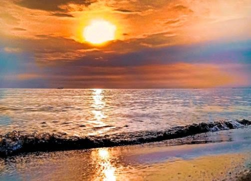

Gambar dan Deskripsi
Pantai Randusanga merupakan tempat wisata hiburan bagi masyarakat yang terletak di wilayah Kab. Brebes, Jawa Tengah. Setiap hari weekend banyak sekali pengunjung dari lokal maupun luar Brebes yang mengunjungi pantai Randusanga terutama di pagi hari dan sore hari karena pemandangannya bagus.